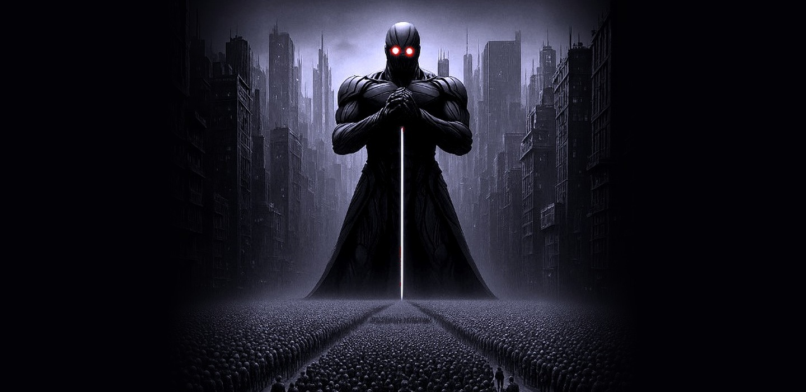

Fabrice Djimé — 2065
Homo homini lupus. — Thomas Hobbes, LéviathanDécouvrir le roman
Dans un monde ravagé par les crises climatiques, un État techno-totalitaire étend son pouvoir par le Neuro-Vaccin — une technologie qui supprime les émotions profondes et efface toute velléité de rébellion.
Au cœur de ce système, une résistance silencieuse cherche à préserver ce qui reste de l'âme humaine. Leur arme : la Singularité Émotionnelle — la capacité des machines à ressentir ce que les hommes ont oublié.
Carnets de construction du Nouveau Léviathan. Notes d'auteur, worldbuilding, philosophie et processus d'écriture.
L'étincelle initiale. Pourquoi la hard SF, pourquoi ce monde, pourquoi maintenant.
4 avril 2026Soumission moléculaire. NV001, NV002 — la mécanique de l'oppression invisible.
4 avril 2026De 2026 à 2065. Les fractures climatiques, politiques et biologiques qui ont rendu le régime possible.
Fabrice Djimé explore les futurs possibles où technologie et pouvoir reconfigurent l'humanité. Son écriture s'ancre dans la rigueur scientifique, la philosophie et la profondeur des émotions humaines.
Ancien enseignant d'anglais et de français, il travaille à l'intersection de la hard SF, de la philosophie de l'esprit et de la dystopie politique.
Pour toute demande, collaboration ou retour de lecture :